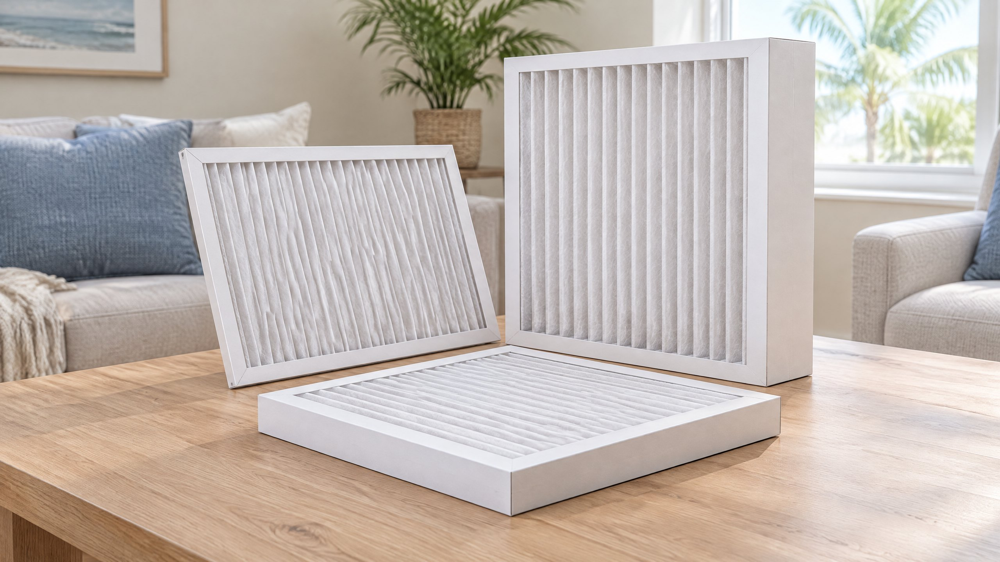

The best filter choice is not simply the package with the largest rating or the longest advertised life. A useful choice matches three things: the installation, the filtration goal, and the airflow the equipment needs. A well-rated filter that leaves gaps, does not fit the cabinet, or creates too much resistance can be a poor match for that home.
This guide helps Tampa and North Tampa homeowners choose a replacement filter or discuss a filtration upgrade. It is separate from diagnosing a whistling return vent, repairing ducts, or treating a medical condition. For help confirming the installation, see On The Way’s air filter replacement service information.

In this guide: Confirm fit and location · Understand MERV · Check airflow compatibility · Compare selection situations · Build a replacement plan · Questions for your contractor
Start With the Filter Location and Actual Fit
Find out where your system is intended to filter its return air. Filters may sit behind return grilles or in a holder near the air handler. PNNL explains that filters are generally placed upstream of the equipment components so returning air passes through them before reaching those components.[3] Do not assume every grille contains a filter or that every system has only one.
Use the equipment or filter-holder instructions to establish the required width, height, depth, and product type. Keep a record of the existing approved filter, but do not treat an old filter as proof that the previous installation was correct. If the frame is loose, the access door will not close normally, or you cannot identify the intended holder, ask the service provider to confirm it before buying replacements in bulk.
EPA advises a snug fit that prevents air from leaking around the filter without requiring the frame to be bent or crushed.[2] Check the product’s actual dimensions as well as the size printed on the package, and compare them with the holder’s specifications. A similar-looking size is not necessarily interchangeable. Do not wedge a deeper filter into a shallow slot or use packing material as an improvised seal.
Record the airflow direction specified for the installation. PNNL notes that most filter frames have an arrow showing the intended direction of airflow.[3] Follow that arrow in relation to the air moving through the holder, not an assumption that it must always point up. Use only the normal homeowner filter-access procedure described by the manufacturer; an electrical or equipment service panel is not a filter-access shortcut.
What MERV Does—and Does Not—Tell You
MERV means Minimum Efficiency Reporting Value. EPA describes it as a way to compare a filter’s ability to capture particles in specified size ranges, using an ASHRAE-developed test method. Higher ratings correspond to better capture in those tested ranges.[1] The rating does not tell you whether a particular frame fits your return grille or whether the blower can maintain the required airflow through it.
EPA recommends selecting MERV 13, or as high as the system can accommodate, and emphasizes the limits of the system fan and filter slot.[2] That is a compatibility-qualified recommendation, not an instruction to install the same filter in every Tampa home. If the equipment requirements are unclear, confirm them rather than guessing from the system’s age or the brand name on the outdoor unit.
Some packages use proprietary ratings such as MPR or FPR. EPA distinguishes these brand-specific systems from MERV.[2] Do not treat equal-looking numbers on different scales as equivalent. Ask for the product’s MERV information and applicable performance data when comparing unlike labels.
MERV is also not a promise that all particles, odors, or pollutants will disappear from the home. Air has to pass through the filter, the frame has to fit, and the system has to operate. Filtration performance in a test does not describe every room’s conditions or establish an individual health benefit.
Compare Particle Capture With Resistance to Airflow
PNNL identifies two separate aspects of filter performance: particle capture and resistance to airflow, commonly called pressure drop.[3] A filter may capture particles well while still being unsuitable for a particular installation’s airflow requirements. The filter is one part of a system that also includes the return path, blower, coils, supply ducts, and registers.
Do not use MERV alone as a pressure-drop chart. PNNL explains that a higher-MERV product does not necessarily have more resistance than a lower-MERV one; media design, pleat area, depth, airflow, and loading all matter.[3] Compare the actual product information at relevant airflow conditions, not an unsupported rule that every rating adds a fixed amount of restriction.
For an upgrade, ask the contractor whether the proposed filter and holder allow the required equipment airflow. Depending on the situation, that can require inspecting the installation and measuring filter or system pressure and airflow. There is no universal homeowner pressure number in this guide: the equipment specifications and the measurement conditions determine what a result means.
A deeper media cabinet can provide more filter area, but only when designed and installed for that purpose. PNNL discusses increasing filter area as one way to reduce resistance.[3] That does not mean a deeper filter can replace a thin one in the same grille, or that changing a cabinet solves every airflow problem. Any proposed change should state what is being altered and how compatibility will be checked.
A Practical Filter-Selection Decision Table
On a phone, scroll the table sideways to read all three columns.
| Your situation | What to compare | What to confirm first |
|---|---|---|
| Routine replacement; approved product is known | Same specified fit and an approved equivalent | Product type, actual dimensions, direction, and replacement guidance |
| Higher particle capture is desired | System-compatible higher-MERV products | Holder fit and pressure-drop/airflow compatibility |
| Filter bends, gaps, or prevents the door closing | Correct dimensions and holder condition | Whether the existing product or installation is wrong |
| Several filter locations exist | The documented filtration arrangement | Which positions are intended to contain filters |
| Noise or weaker airflow follows a change | New versus previous approved product | Fit, condition, resistance, and other equipment causes |
| Persistent humidity or musty odor | Moisture diagnosis separate from filter selection | Where moisture comes from; a filter is not its remedy |
The table is a selection framework, not a system diagnosis. If the previous product is no longer available, do not choose an equivalent based only on price, frame color, or package wording. Compare documented fit and filtration performance, and ask for help when the new product’s airflow information is missing.
Do Not Add Extra Filters as an Improvised Upgrade
If a return grille has a filter and the air handler also has a filter cabinet, ask which arrangement the installation is designed to use. Do not stack disposable filters in one slot or add filtration at another point simply because there is space. PNNL’s guidance requires the HVAC design to account for filter pressure drop.[3] Extra resistance should be evaluated, not treated as a free improvement.
The same principle applies to a washable-to-disposable switch or a different media depth. Follow the equipment and product instructions, including cleaning and drying requirements for a reusable product. A product described as reusable is not maintenance-free; a disposable product should not be washed unless its manufacturer explicitly allows it.
Build an Inspection and Replacement Plan
ENERGY STAR recommends checking filters monthly and replacing or cleaning them as needed.[4] Monthly inspection is not the same as automatic monthly replacement. Begin with the filter manufacturer’s instructions and adjust the plan when actual condition or loading shows that the interval is unsuitable.
EPA notes that several factors affect how quickly a filter gets dirty and recommends following manufacturer replacement guidance.[2] For your Tampa household, record the installation date, product, and observations instead of relying only on a calendar reminder. Long cooling runtime, occupants, pets, and renovation dust are reasons to observe the actual filter condition—not reasons to promise the same lifespan in every home.
Look for a heavily loaded surface, a damaged frame, poor seating, or unexpected moisture through the ordinary accessible filter location. Do not run the system without the required filter as a workaround. A wet filter or recurring damage deserves assessment of the cause, not merely a shorter subscription interval. If access requires a ladder, entering an attic, or opening a service cabinet, ask for assistance rather than improvising.
Keep one replacement record for each system or approved filter location. A household with two different holders may need different products and intervals. Label your record by system, not just “house filter,” so replacements do not get mixed between a thin return-grille filter and a deeper cabinet filter.
What If a New Filter Changes the Sound or Cooling?
A whistle, weaker airflow, or changed operation after a filter swap is useful information, but does not prove that the MERV rating alone caused it. Record the product change, fit, and when the difference began. Our return-whistle article covers that narrower symptom. Request an assessment if the change persists or the product cannot be confirmed as compatible.
ENERGY STAR includes filter condition, blower components, and airflow in HVAC care.[4] A contractor should distinguish a loaded or poorly fitting filter from return-path or equipment problems. For a separate duct-condition decision, use our duct sealing, repair, or replacement guide; changing a filter does not repair a disconnected duct.
Filtration Does Not Replace Humidity or Source Control
EPA explains that HVAC particle filters do not remove every pollutant and do not resolve the moisture problem that causes mold or musty conditions.[2] A higher rating is not a substitute for finding a leak, evaluating condensation, or dealing with a persistent moisture source. This guide does not identify mold or prescribe medical treatment.
Air passes through a central filter when the system moves air, but continuous blower operation is a separate comfort decision. Do not change the fan to continuous operation solely to compensate for a filter choice without considering moisture behavior. Our Fan Auto versus On article explains that distinction. Filter selection and humidity control should be discussed together when those concerns overlap.
After moisture sources and equipment faults are evaluated, a separate selection question may remain. Our whole-home dehumidifier versus AC-only guide explains supplemental humidity control; it is not a substitute for correcting a leak or selecting a compatible particle filter.
Questions to Ask Before a Filtration Upgrade
A useful recommendation names the actual product or performance specification, explains how it fits, and states how compatibility was established. Avoid accepting “premium filter” as the entire explanation. If a new holder or cabinet is proposed, the scope should also identify access, dimensions, and any other installation changes.
| Ask for | What the answer should clarify |
|---|---|
| Approved fit | Holder location, dimensions, depth, product type, and installation direction |
| Filtration target | MERV information and why it matches the household’s stated goal |
| Airflow basis | Product resistance information, equipment requirements, and measurements when needed |
| Maintenance plan | Inspection frequency, manufacturer guidance, and signs that call for earlier attention |
| Limits and exclusions | Whether moisture, noise, duct, or equipment concerns remain separate |
Keep that record with the equipment information so future replacements are consistent. On The Way’s AC maintenance information covers ongoing equipment care; an AC assessment is appropriate when the concern extends beyond choosing a filter. Ask for documented findings rather than promises about bills or health outcomes.
Frequently Asked Questions
Is MERV 13 the right AC filter for every Tampa home?
No. EPA recommends MERV 13 or as high as the system can accommodate. Confirm the fan, slot, product fit, and airflow compatibility before upgrading; the recommendation does not approve one product for every installation.
Does a higher MERV rating always restrict airflow more?
No. MERV reports particle capture, not pressure drop. Media design, area, depth, airflow conditions, and loading affect resistance. Compare product information and the installation’s requirements rather than assuming a fixed restriction from the rating.
Can I put a deeper filter in my existing return grille?
Only if the holder is designed for that product and depth. Do not bend, crush, or wedge a filter into a slot. A deeper-media upgrade may require a different holder and a compatibility assessment.
How often should I replace my AC filter?
Inspect it regularly and follow manufacturer instructions, using actual loading and condition to adjust the plan. ENERGY STAR recommends monthly checks, not automatic monthly replacement. Different systems and households can need different intervals.
Will a better filter solve indoor humidity or a musty smell?
Not by itself. Particle filtration does not resolve the moisture source behind a mold or musty condition. Have recurring moisture or changed system operation assessed separately rather than treating a filter upgrade as the remedy.
Sources
- EPA: What Is a MERV Rating? — tested particle capture and rating meaning.
- EPA: Guide to Air Cleaners in the Home — system-compatible filtration, snug fit, replacement guidance, and moisture limitations.
- PNNL Building America Solution Center: High-MERV Filters — filter location, airflow direction, media design, and pressure-drop compatibility.
- ENERGY STAR: Maintenance Checklist — monthly filter inspection and professional airflow care.
Editorial Source Review & Publisher
Published by On The Way Heating & Air for Tampa and North Tampa homeowners. This guide was checked against the cited EPA, national-laboratory, and HVAC maintenance guidance. It is a general selection framework, not approval of a filter for an individual system. Dustin Miller began HVAC work with his father in 2006; that family-rooted background is company context, not a claim of a personal inspection or medical review.